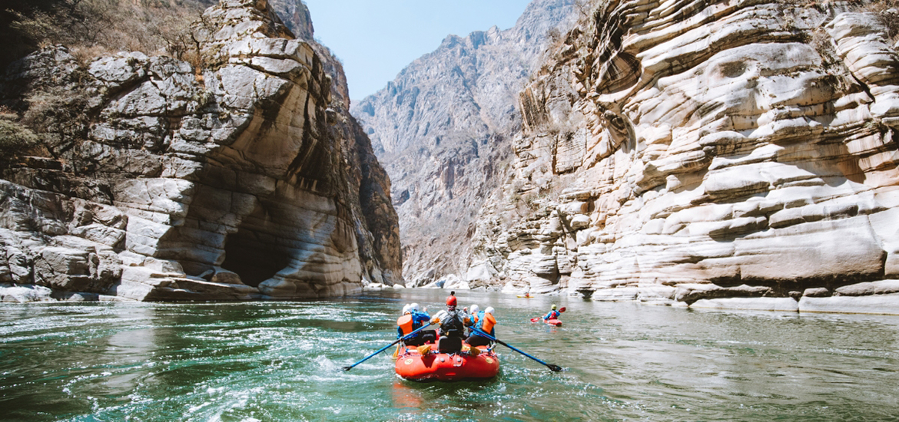
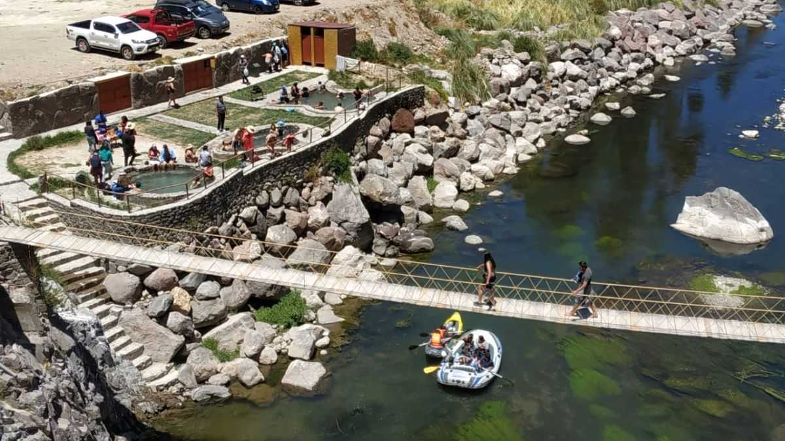
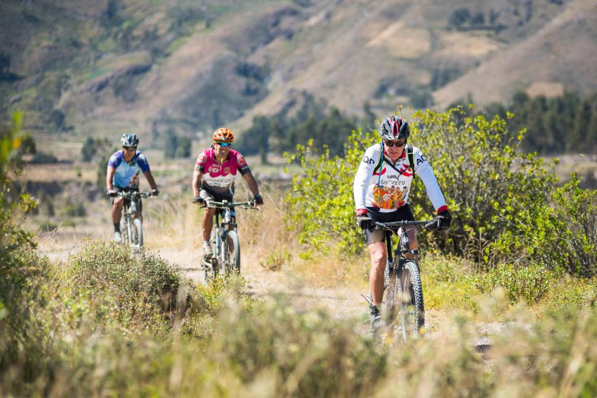
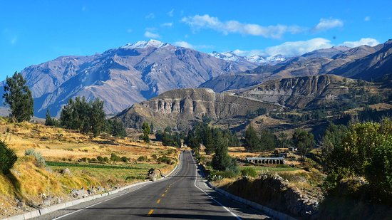
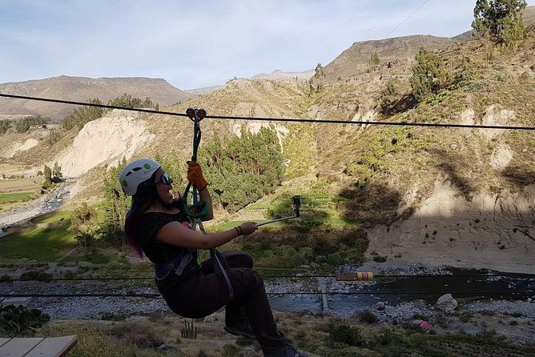
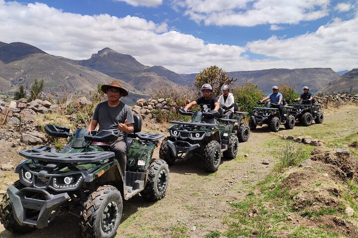
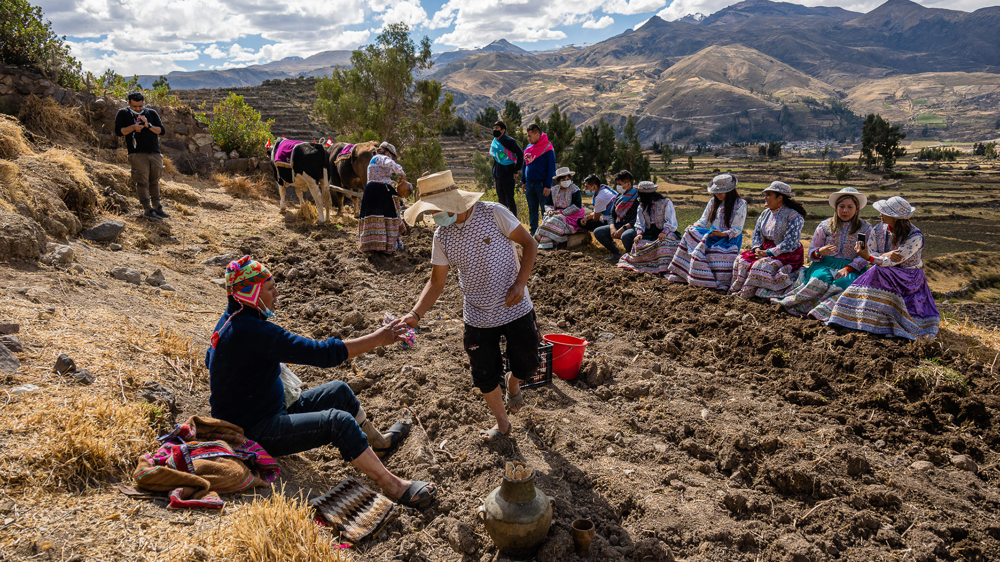
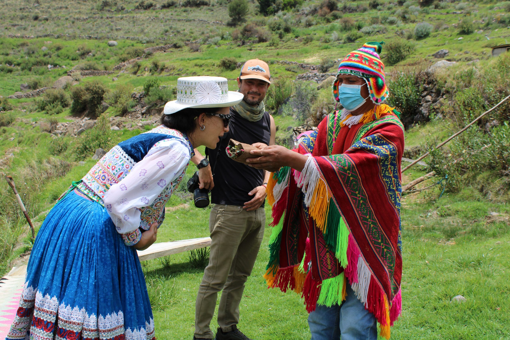
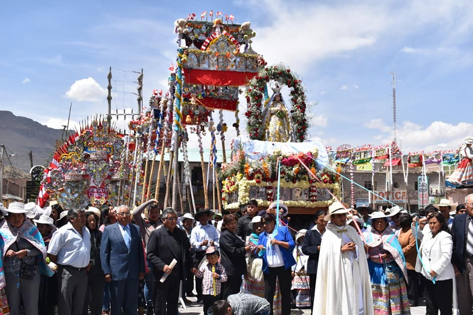
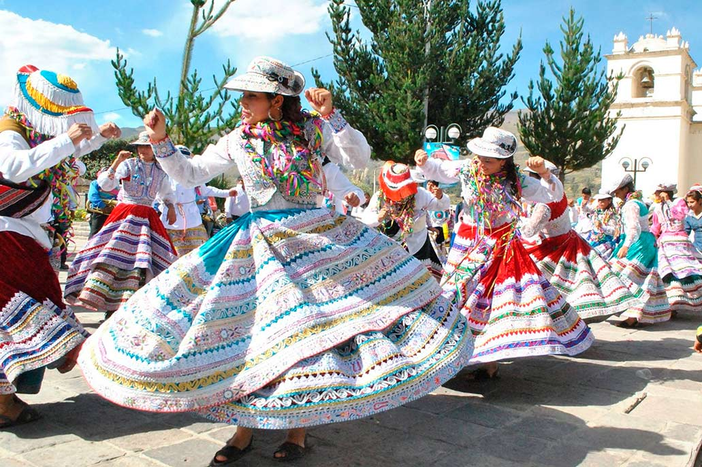

2. Adventure and Extreme Sports
The Colca Valley is a hidden paradise where nature becomes the perfect setting for an unparalleled extreme adventure.
Imagine feeling the adrenaline rush through your body as you descend the Colca River, with its turbulent waters challenging
you at every swirl. Or flying above the stunning canyons and mountains as you zipline, experiencing the freedom of soaring
through the skies with breathtaking panoramic views.
The mountain routes are a playground for the most daring cyclists. With every turn, every steep descent, mountain biking on
these rugged trails connects you to the land in a visceral way, pushing your limits while you cross landscapes that seem
out of this world. And if you're someone who seeks even more action, the ATV circuits take you through unexplored terrain,
where speed becomes the engine of your adventure across rocky landscapes and remote paths.
The Colca Valley is not just a destination; it's an invitation to live on the edge. Its imposing geography, with steep
mountains, deep canyons, untamed rivers, and awe-inspiring landscapes, invites you to immerse yourself in a pure adrenaline
experience. Here, every corner challenges you, and every bend in the path pushes you to go further.
Among the most exciting sports are:
a. Kayaking
Kayaking in the Colca Valley is a unique experience that combines adrenaline, adventure, and the natural beauty of this
breathtaking place. The Colca River, with its fast and challenging waters, is the perfect setting for water sports
enthusiasts. This river flows through deep canyons, surrounded by rock formations and spectacular landscapes, offering
an ideal environment for kayaking.

Rapid Waters of the Colca River: The Perfect Terrain for Kayaking
The Colca River has sections with Class II to Class IV rapids, making it an excellent destination for both beginners
and experienced kayakers. The rapids create a series of exciting challenges, with fast-moving water requiring technique,
concentration, and agility to navigate safely. These rapids are perfect for enjoying the adrenaline while also taking in
the grandeur of the surrounding landscape.
The calmer sections of the river also offer moments of relaxation and enjoyment, where you can paddle peacefully while
appreciating the stunning views of the canyons and mountains. But it's in the rapids, where the waters churn and the current
accelerates, that kayaking truly takes on its meaning as an extreme sport.
Places Where Kayaking is Most Practiced in the Colca Valley
Kayaking in the Colca Valley can mainly be practiced in the following areas:
- Colca Canyon: The section of the river that crosses the famous Colca Canyon is one of the most exciting points for kayakers. Here, you'll find some of the most intense rapids in the area, with a landscape combining the canyon's rock formations and surrounding vegetation. This place is ideal for adventurers looking for an extreme experience.
- Yanque: From the Yanque district, which is the gateway to the Colca Valley, kayak excursions are organized along the calmer waters of the river. This area is perfect for those who want to practice the sport in a more relaxed way while enjoying panoramic views of the valley.

- Canco: This locality, located near the canyon, is another popular spot for kayakers. Here, the waters of the Colca River present moderate rapids, making it an excellent option for those looking for a more challenging but safe kayaking experience.
- Sangalle: The Sangalle Oasis, located at the bottom of the Colca Canyon, is another notable spot for kayaking. Although most travelers access this place on foot, some river routes also allow for water sports in the calmer waters near the oasis, creating a relaxing and unique experience in an impressive setting.
Tips for Kayaking in the Colca River
- Know your level: Before tackling the more difficult rapids, make sure you know your skill level. If you're a beginner, start with the gentler rapids (class II) and gradually increase the difficulty as you gain confidence.
- Proper equipment: It's essential to have quality kayaking equipment, including a helmet, life jacket, and appropriate paddle. Never underestimate safety, as the river can be unpredictable, and it's always better to be prepared.
- River conditions: Make sure to check the river conditions before heading out. The rainy season can increase the intensity of the rapids, so it's important to know the river's status to adjust the difficulty of your adventure accordingly.
- Paddling techniques: In the rapids, it's essential to have good paddling techniques. Learn how to use the paddle at the correct angle to maneuver effectively and avoid capsizing in the most turbulent moments.
- Local guide: If you're not an expert kayaker or if you want to experience the adventure safely, hiring a local guide is an excellent option. They know the river, its rapids, and the best routes, ensuring your adventure is both thrilling and safe.
The Magic of Kayaking in the Colca Valley
Kayaking in the Colca Valley is not only an adrenaline rush but also an incomparable way to connect with nature. Navigating between rocks, canyons, and mountains while experiencing the force of the river and the calmness of its quieter waters allows you to enjoy the landscape in a way few other sports can offer. Without a doubt, kayaking in the Colca is an experience that every adventure lover should try.
b. A Perfect Terrain for Mountain Biking
Mountain biking in the Colca Valley is one of the most exciting and challenging experiences you can have in this stunning corner of southern Peru. With its rugged terrain, towering mountains, deep valleys, and rural roads, this destination offers some of the most spectacular routes for adventure cyclists looking to combine nature, excitement, and physical exercise.
The Colca Valley is a mountainous area with varied topography, making it an ideal playground for mountain biking. Here, you'll find routes ranging from flat dirt roads to steep trails, passing through narrow valleys, cliffs, and traditional villages. Each route offers a different challenge, allowing cyclists to explore the region while enjoying a unique experience in direct contact with nature.
The valley's climate, with its sunny and cool days, provides the perfect environment for covering long distances on two wheels. Temperatures vary according to altitude, meaning cyclists can enjoy all kinds of landscapes, from the warm climate of the nearby villages to the colder, alpine areas at the heights of the volcanoes.
The routes in the Colca Valley are perfect for those seeking strong thrills and breathtaking landscapes. Some of the most popular routes include:
Route Chivay – Cabanaconde
This is one of the most iconic and exciting routes in the valley. From Chivay, the road begins on relatively flat terrain and ascends along dirt roads until reaching Cabanaconde, a picturesque village near the canyon's edge. Along the route, cyclists pass agricultural terraces, corn and potato fields, offering breathtaking views of the Colca Canyon. This route has a significant elevation gain, making it a physical challenge that rewards cyclists with spectacular panoramas.

Route to the Snow-capped Peaks
For the more adventurous cyclists in search of a true challenge, the routes to the snow-capped peaks in the area,
such as Nevado Ampato or Nevado Sabancaya, offer an experience at higher altitudes. With rougher and more
demanding paths, these routes take cyclists through mountain landscapes, glaciers, and desert-like terrain. The altitude can make cycling even more challenging, but the beauty of the landscape and the satisfaction of reaching the summits are unparalleled.
Mirador Circuit
There are routes that allow you to visit the most important viewpoints of the valley, such as the Mirador de la Cruz
del Cóndor. This route not only offers a moderate physical challenge but also provides panoramic views of the
canyon, where you can admire the majestic flight of the Andean condors. The route connects several villages, giving you a unique perspective of rural life and the region's traditional architecture.

Tips for Practicing Mountain Biking in the Colca Valley
- Prepare your gear: Mountain biking in the Colca Valley requires a sturdy bike, especially if you plan to ride steep routes and dirt paths. Make sure your bike is equipped with proper suspension, quality brakes, and strong wheels. Don’t forget to bring comfortable clothing, a helmet, gloves, and sunscreen.
- Adjust your difficulty level: If you're a beginner, it's recommended to start with smoother and shorter routes, such as the circuit to the viewpoints or a route connecting some nearby villages. As you gain experience and confidence, you can try more complex routes like the descent to the Oasis of Sangalle or the ascent to the snow-capped peaks.
- Hydration is key: Since many of the mountain biking routes in Colca are at high altitudes, it’s important to carry plenty of water, especially on hot days. Stay well hydrated, as exercise at altitude can be more demanding and dehydrate you faster.
- Take the weather into account: The weather in the valley can be unpredictable, with cold temperatures in the mornings and evenings, and strong sun during the day. Dress in layers to adapt to temperature changes and bring a raincoat just in case.
- Enjoy the view: While focusing on the route, don’t forget to stop from time to time to admire the spectacular views of the valley, the volcanoes, the villages, and the canyons. The Colca Valley is a place of incomparable beauty, and every bend in the road offers a new perspective of the Andean landscape.
A Meeting with Nature
Mountain biking in the Colca Valley is not just a sport; it’s a way to immerse yourself deeply in the nature and culture of the region. Pedaling through agricultural terraces and traditional villages, passing through hidden valleys, and reaching elevated viewpoints, cyclists have the chance to connect with the heart of the Colca Valley in a visceral way.
The physical challenge of the mountain routes is complemented by the incredible beauty of the region, where every kilometer traveled rewards you with unique landscapes that can only be experienced in such an active and close-to-nature way. The Colca Valley, with its dramatic topography, offers an unforgettable experience for mountain bikers seeking not just a physical challenge, but also an epic adventure in an unparalleled environment.
3. The Adventure of Flying Over the Colca
The Colca Valley is famous for its massive canyons and mountains, making it the perfect environment for practicing zip-lining. With the wind in your face, you’ll glide across a spectacular landscape, where panoramic views of the valleys, rock formations, and lush vegetation will leave you speechless. Flying above these landscapes provides a unique perspective that you can only experience from the air, while fully immersing yourself in the natural beauty of the region.
The Zip Line Circuit
The zip line circuit in Colca generally consists of several long cable lines that allow adventurers to glide from one high point to another. These cables cross deep valleys and extend over cliffs, giving you the sensation of flying. Depending on the location and the specific circuit, some of the zip lines in Colca can reach heights of up to 400 meters above the ground, making the experience a true adrenaline rush.

Where is Zip Lining Practiced in the Colca Valley?
One of the most well-known destinations for zip lining in the Colca Valley is the area near Chivay, the main town at the entrance to the valley. Here, platforms and cables have been installed that allow visitors to enjoy zip lining while admiring panoramic views of the Canyons and the surrounding mountains.
In some cases, the zip line is located near other adventure activities, such as kayaking or mountain biking, creating adventure tourism packages that allow travelers to enjoy several extreme thrills in a single day.
Tips for Enjoying the Zip Line Experience
- Trust the safety equipment: Before launching, make sure the safety equipment is in perfect condition. The harness, cables, and helmets are essential to ensure your safety, so never hesitate to ask the guide about the equipment and procedures.
- Relax and enjoy the view: The excitement of flying might make you forget the stunning landscape around you. Remember that, in addition to the adrenaline, you are witnessing one of the most impressive views of the Andes. Relax, take a deep breath, and enjoy the view while you fly.
- Appropriate clothing: Wear comfortable, tight clothing. Avoid loose garments that might catch during the flight. It’s also recommended to wear sports shoes for added comfort.
- Prepare your mind for the adrenaline: Although zip lining is completely safe, the idea of flying over a deep canyon may be intimidating for some. Take your time to relax, follow the guide’s instructions, and remember that the experience is fully controlled.
- Best time to enjoy it: Zip lining can be enjoyed year-round, but the ideal season is from May to September when the weather is warmer and drier. During the rainy months, some areas can become slippery, so always check the weather conditions before your adventure.
The Sensation of Flying
What makes zip lining in the Colca Valley even more special is the blend of the sensation of flight and connection with nature. As you glide over the canyon, the feeling of freedom is indescribable. The wind caressing your face, the speed and height, combined with the imposing beauty of the region, provide a unique experience. It’s one of those activities where the body is filled with adrenaline, and at the same time, the mind feels completely at peace with the grandeur of nature.
Zip Lining: An Adventure for All
Although zip lining is an exciting activity, it is accessible for most people. Safety is the top priority in these circuits, and professional guides will accompany you throughout the process, ensuring that you enjoy the experience safely. Whether you are a beginner or an experienced extreme sports lover, zip lining in the Colca Valley will offer you a unique experience, full of excitement and spectacular views.
4. ATV Rides on Remote Circuits
The ATV ride through the Colca Valley is one of the most exciting experiences you can have in this majestic region. Thanks to the unique geography of the area, with its imposing mountains, deep valleys, and unpaved roads, ATVs become the ideal means to explore this natural paradise, accessing remote corners that would otherwise be difficult to reach.
The Adventure of Conquering the Terrain
With an ATV, the Colca Valley transforms into a vast field of adventure. ATVs allow you to traverse the roughest and steepest terrain, crossing dirt roads, agricultural terraces, and volcanic areas. As you progress, the landscape constantly changes: from the heights, where you can enjoy panoramic views of the Canyons, traditional villages, and the snow-capped peaks of the volcanoes, to the green and remote valleys, where the tranquility of nature seems to envelop everything.
The Sensation of Freedom and Excitement
The ATV ride gives you the opportunity to experience a unique sense of freedom while traversing breathtaking landscapes. The wind in your face, the roar of the engine, and the direct connection with the mountainous terrain make this ride an adrenaline-filled experience. The valleys and mountains of Colca are the perfect setting for this type of adventure, as they allow you to enjoy close contact with nature and the local culture.
An Intimate Encounter with Nature
On an ATV, it is possible to explore more remote and less-traveled areas of the Colca Valley, where the beauty of the landscape surrounds you in its purest form. You’ll enjoy views of the Colca Canyon, witness the daily life of traditional villages, and immerse yourself in the volcanic territory of the region, with its rock formations and unique volcanic geography. All this while living an adventure that makes you feel part of the landscape.
Tips for Enjoying the Quad Bike Ride
- Safety first: Although quad bikes are relatively easy to handle, it is always advisable to receive a brief training or instructions on how to use the vehicle, especially on difficult terrains. Local guides, experts in the area, are the best allies to ensure a safe and fun experience.
- Proper equipment: Don’t forget to wear comfortable clothing, closed boots, gloves, and a helmet. It is essential to enjoy the experience safely and comfortably.
- Respect the environment: The Colca Valley is a protected area with high ecological value. Make sure to follow the guides' recommendations and respect the established paths to minimize environmental impact and preserve the beauty of the place.
- Enjoy the scenery: Despite the speed and excitement of the ride, remember that you are crossing a unique place in the world. Take your time to stop, admire the views, and breathe the fresh Andean air.

Emotion, Freedom, and Nature
The quad bike ride in the Colca Valley is much more than an adventure activity: it is a way to connect with the region in a visceral manner. The sound of the engine, the power of the quad bike, and the grandeur of the landscape make each kilometer traveled a new emotion. Whether sliding through steep paths or exploring hidden volcanic zones, this is an experience that will allow you to see Colca from a completely different perspective.
Enjoying this quad bike ride is an incredible way to immerse yourself in the vastness of nature while experiencing an authentic adventure that combines excitement, stunning landscapes, and a unique connection with one of the most beautiful valleys in Peru.
5. Horseback Rides: Interaction with Places and Animals
The horseback rides in the Colca Valley offer a unique experience for those who want to explore this stunning landscape in a more tranquil and profound way. Riding through the valleys, canyons, and mountains of this region allows you to connect more intimately with nature while traveling ancient paths of the villages and enjoying unmatched views of the Andean landscapes.
The horseback rides in the Colca Valley are not only an adventure where the landscape becomes a moving canvas, but also a journey into the past, as many of the paths you travel have been used by local communities for centuries. Chivay, the main town in the valley, and other nearby towns are ideal starting points for these horseback rides, taking you through ancient agricultural terraces that are still cultivated today, and along rivers, forests, and mountains.
Throughout the ride, the horse guides you along a tranquil path where you can enjoy the beauty of the landscapes in their fullest expression. From the green valleys, where small family farms are found, to natural viewpoints offering panoramic views of the volcanoes and canyons, the horseback ride allows you to immerse yourself in pure, almost untouched nature.
The Peace and Magic of the Colca Valley
Riding a horse through the Colca Valley is an experience that fosters a deep connection with the surroundings. As you travel these paths, surrounded by imposing mountains, the sound of the hooves on the earth and the gentle rhythm of the horse invite you to disconnect from everything and simply enjoy the moment. It is a journey that gives you time to reflect and admire the majesty of the Andean mountains and the life flowing in this rugged landscape.
The Encounter with Local Culture
Along the way, the horseback rides also offer the opportunity to interact with the local communities. Horses are an essential part of daily life in many towns in the Colca Valley, and riding through these routes also allows you to get closer to the ancestral traditions of the region's inhabitants. Many local guides, experts in the history and culture of the area, can tell you about the customs, rituals, and daily life in the valley, giving you a deeper and more enriching insight into the place.
Adventure and Relaxation to the Rhythm of the Horse
The relaxed pace of a horseback ride makes this activity an ideal option for those seeking a more tranquil adventure but equally impressive. It's not just about the thrill of the journey, but also the serenity the surroundings offer. As the horse moves at its own pace, you have plenty of time to appreciate native plants, local wildlife, and the clear sky, all while immersing yourself in the heart of the Andes.
Tips for the Horseback Ride
- Comfortable and appropriate clothing: It is important to wear comfortable clothing, preferably long pants and closed boots for greater comfort during the ride. Since Andean weather can be unpredictable, bring a light jacket or sweater as well.
- Sun protection: As you will be exposed to the sun during the ride, don’t forget to apply sunscreen and bring sunglasses, especially if you decide to ride during the hottest hours of the day.
- Respect for the horses: If you’ve never ridden before, local guides will be there to teach you the basics and ensure you have a safe and comfortable experience. Keep in mind that the horses are trained to follow the trails, but it’s always recommended to follow the guide's instructions to ensure everything goes smoothly.
- Enjoy the moment: Horseback rides are perfect for enjoying the peace and beauty of the place. Take your time to relax and admire the landscape. There’s no rush; each step of the horse takes you deeper into the magnificence of the Colca Valley.
An Unforgettable Memory
Horseback riding through the Colca Valley offers a different experience, full of tranquility and natural beauty. Through these rides, you not only explore the land but also immerse yourself in an ancient and profound culture while enjoying the serenity of the Andean landscape. It’s a unique way to connect with nature, history, and the culture of the valley, creating memories that will last forever.
6. Experiential Tourism in the Colca Valley
Experiential tourism in the Colca Valley is an authentic and enriching way to connect with the local culture by living closely with the traditions, customs, and daily life of the Andean communities. This type of tourism offers a more immersive experience, allowing you to not only observe but actively participate in the life of the towns, while exploring the region's natural wonders.
Experience in Traditional Villages
Visiting the Andean towns surrounding the Colca Valley, such as Cabanaconde, Chivay, and Pinchollo, allows you to experience the rural life of the communities that have inhabited these lands for centuries. Through experiential tourism activities, you can taste local food, participate in agricultural work, and share moments with the inhabitants who still preserve their traditions.

Learn about Agricultural Techniques
You will be able to observe how local communities work the land using ancestral techniques, such as planting corn, potatoes, and quinoa on agricultural terraces. Some tours offer the opportunity to participate in these activities, allowing you to understand how families have adapted their farming methods to the unique geography of the valley.
Cattle Farming
Cattle farming is also a key activity in the Colca Valley, especially in the areas of alpacas and llamas. Some experiential tourism programs include visits to farms and grazing posts, where you can learn to care for these animals, participate in wool collection, and understand the techniques used to make traditional textiles that are later sold in local markets.
Wool and Weaving Culture
One of the most interesting aspects of experiential tourism in Colca is the opportunity to learn about the weaving process carried out in communities like Chivay. Here, you can be part of the wool spinning process, learn to weave with traditional looms, and understand the meaning of the designs used in Andean textiles, which are often linked to the local worldview and elements of nature.
Local Cuisine and Traditional Cooking
Experiential tourism also allows you to delve into Andean gastronomy. You can participate in cooking workshops where you’ll learn how to prepare typical regional dishes such as rocoto relleno, chuño (dehydrated potato), and cuy (guinea pig). The inhabitants of the Colca Valley are delighted to share their recipes and culinary secrets, making the experience truly authentic.
Cultural Hiking
In addition to exploring nature, some experiential tourism tours include cultural hiking, where local guides tell stories, legends, and knowledge about the natural surroundings, ancestral customs, and the spiritual traditions of the communities. You can visit sacred places, such as ancient pre-Inca sites or stone structures, which serve as a connection between the past and present of the region.

Experiential Tourism in the Mountains
In the surroundings of Cabanaconde, it is possible to participate in walks that not only show the natural wonders of the area but also allow direct interaction with the locals, who share their customs, life stories, and their relationship with the land. You can see how the fields are cultivated, how people live at high altitudes, and how they have managed to maintain their identity and customs over the centuries.
Adventure with Purpose
Experiential tourism in the Colca Valley is not just about observing but about actively engaging, learning from the communities, and leaving a positive impact on them. Many of the programs are designed for visitors to contribute in some way to the local well-being, whether by supporting the economy of the communities through the purchase of handcrafted products or participating in sustainable development initiatives.
A Deep Encounter with Andean Culture
In summary, experiential tourism in the Colca Valley offers a rich experience in learning, culture, and tradition. This type of tourism allows you to connect deeply with the customs and life of the local communities while exploring the impressive natural landscapes that make this valley truly special. It’s a more conscious way to travel, where the interaction with the environment and its inhabitants becomes a transformative experience.
7. Celebrations in Honor of the Saints
The Colca Valley is not only known for its imposing nature but also for its rich cultural tradition and vibrant festivals that take place throughout the year. Local festivities are a unique way to immerse yourself in the life of the communities, where music, traditional dances, and vivid colors come together to create an unmatched experience.
In many of the valley’s towns, such as Chivay, Cabanaconde, and Pinchollo, the most important festivities are held in honor of the religious patron saints of each locality. These celebrations take place in May or at other times of the year, depending on each town’s liturgical calendar. During these days, the locals wear their best traditional outfits, and the streets fill with music, dance, and color, creating an atmosphere of joy and camaraderie.

Fun for All: Locals and Tourists Together
The most special part of the Colca Valley’s festivities is the meeting between tourists and locals, who come together with one intention: to enjoy and celebrate. The valley’s inhabitants are extremely friendly and welcoming. Tourists can be seen joining in the dances, interacting with the locals, and sharing laughter in an atmosphere of brotherhood and fun. Visitors have the opportunity to immerse themselves in the traditions, learning to dance or simply enjoying the music, while feeling part of the community.
Traditional Clothing: A Burst of Colors
During these celebrations, the people of Colca showcase the traditional clothing of the region, which is a true reflection of Andean culture. Women wear embroidered blouses, long skirts, and adorned hats, while men wear colorful ponchos, hats, and traditional pants. The clothes are not only a symbol of cultural pride but also show the deep connection the inhabitants have with nature, as many of the colors and patterns are inspired by the elements of the Andean landscape.

Music Festivals and Celebrations
In addition to religious celebrations, throughout the year there are cultural and music festivals, where local orchestras and live music groups perform energetic presentations. These festivals attract both tourists and locals, becoming a meeting point where local music resonates throughout the valley. It’s common to see people dancing to the rhythm of drums and flutes, creating a vibrant atmosphere that is not easily forgotten.
Typical Food and Local Cuisine
No celebration in the Colca Valley is complete without enjoying local cuisine. During the festivities, food stalls are filled with traditional dishes such as rocoto relleno, cuy chactado (fried guinea pig), and puchero (a stew of meat and vegetables). These delicacies are an essential part of the festive experience, and tourists can enjoy the authenticity of Andean flavors while learning about the culinary customs of the valley’s inhabitants.
Join the Festivities of the Colca Valley
The festivals in honor of the saints in the Colca Valley are an excellent opportunity to immerse yourself in the authentic culture of this region. Through these celebrations, visitors have the opportunity to interact directly with the locals, learn their traditions, and enjoy the warmth of the valley’s people. It’s a unique opportunity to connect with the essence of the Andean culture while celebrating with the residents of this magical place.